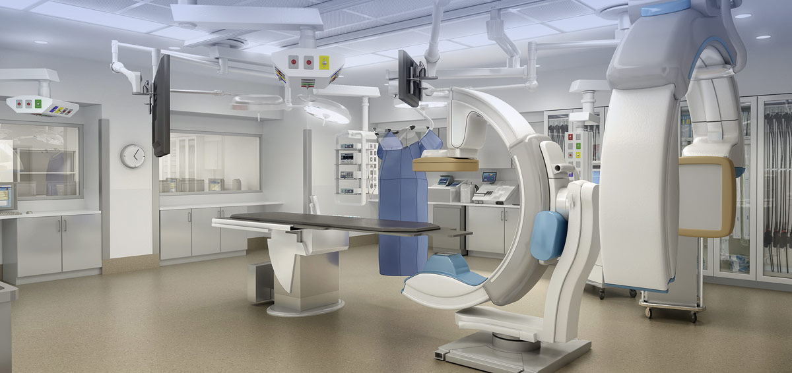

Get Well Hospital
For Emergency : +91-22-66668888
For Appointments : +91-22-66668888
Board Line : +91-22-66668888
Sign Up
Login
Introducing the new Bariatrics (Obesity Surgery) and Bone Marrow Transplant

Home
About Us
Find A Doctor
Make An Appointment
Contact Us
Overview
Get Well Hospital was established in 1946. Today, 70 years in the service of providing quality healthcare with commitment and distinction, Get Well Hospital holds a steadfast position of trust and respect in the hearts and minds of the people it serves. It is an institution renowned for its medical excellence, the dedication of its consultants and the care and compassion of its staff.
Get Well Hospital began as Get Well Nursing Home when its founders set up a facility that could offer personalized care of high quality at an affordable price to the people of Mumbai. On the 6th of February, 1946, with only a few beds, it became the city's first significant private hospital. Soon Get Well Nursing Home had a bed strength of 60 and had added facilities as the first professionally run hospital kitchen and linen department. As patient demand increased, so did the number of beds and facilities.
The Get Well Hospital synergy thus provides the best outcomes for the patient: superior technology and medical skill combined with quality patient care. Since 2002, Get Well Hospital has gone from a 180 bed hospital to a 350 bed multi-specialty tertiary care hospital.
Vision and Mission
Vision:-
“Our vision is to be the region's foremost healthcare provider with access to diverse clinical services focusing on consistency in delivery of quality care and use of best technology.”
Mission:-
“Our mission is to provide healthcare of international standards through a team of qualified professionals and at a cost affordable to the community. We are also committed to maintain clinical excellence by focusing on healthcare academics and use of latest technology.”
Chairperson's Message
Thank you for dropping by. We appreciate it. The hospital has evolved into one of the finest - and certainly the most preferred - healthcare provider in Mumbai.
A warm and friendly ambience, high quality medical services and personalized nursing care have been the hallmarks of Get Well Hospital, ever since its inception in 1946.
Those of you who have visited us earlier will notice that we place as much value on therapy as on technology. We are dedicated to providing meaningful care for all those who seek healing through modern day remedies as much as we advocate the cause of wellness.
“Retaining our values as we modernize, we add care”
perfectly illustrates how we are forging ahead. The patient remains the centre of all our endeavours as we evolve with changing times. Several generations of patients bear testimony to our dedication, to the quality of our care and our sensitivity to all who come through our doors. The continuum of care is an added edge that we offer as a hospital and we aim to be at the top of the list.
Our aim is to ensure sentiments of satisfaction and peace consistently, from patient to patient. We continue to do so through our unrelenting efforts to devise processes that revolve around the patients' well-being.
Our philosophy is to offer the expected level of quality and care at a fair price. As care providers, we have succeeded in enhancing our service standards without overburdening the patients financially. The overall value delivered through prompt access has resulted in a high level of satisfaction amongst our patients.
Our doctors are an integral and vital part of our commitment to deliver exceptional care. Their passion to heal and their constant drive toward higher quality outcomes is unmatched. They are thoroughly professional, approachable and always ready to extend a personal touch. They bring their excellence to speed up the patient’s recovery and return to normal life with the least amount of stress.
Here, at Get Well Hospital, we encourage you to be healthy in mind, body and spirit, all of which are the essence of fitness. Good health has always been a priceless asset, and will continue to remain one as well.
As we evolve, so do our levels of proficiency and merit. We run several programs for our personnel to sustain a high level of academic competence.
Changing lifestyles underline the need for us to learn more about our overall well-being and the importance of preventive healthcare. Get Well Hospital believes in educating people about staying well and driving them toward sustained good health by running awareness programs regularly.
We encourage you to stay well.
Chairperson, Get Well Hospital
ABOUT
PATIENTS AND VISITORS
Find a Doctor
Make an Appointment
HEALTH INFORMATION
 Get Well Hospital
For Emergency : +91-22-66668888
For Appointments : +91-22-66668888
Board Line : +91-22-66668888
Get Well Hospital
For Emergency : +91-22-66668888
For Appointments : +91-22-66668888
Board Line : +91-22-66668888